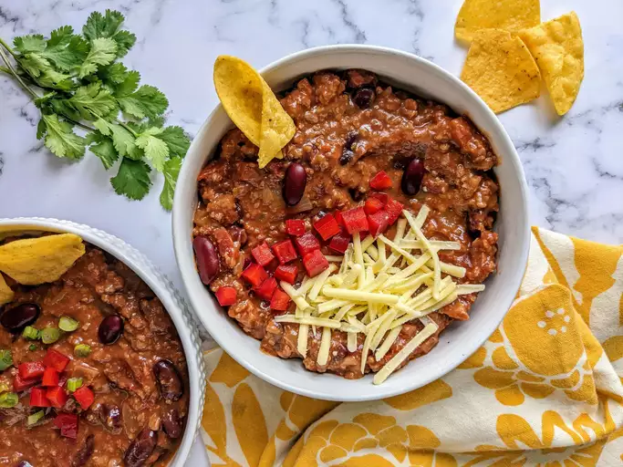

Chili

This homemade chili is loaded with beef, beans, and crowd-pleasing flavor.
- 1 pound ground beef
- 1 onion, chopped
- 1 (15 ounce) can tomato sauce
- 1 (15 ounce) can kidney beans
- 1 (14.5 ounce) can stewed tomatoes
- 1 1/2 cups water
- 1 pinch chili powder
- 1 pinch garlic powder
- salt and pepper to taste
- Place ground beef and onion in a large saucepan over medium heat.
- Cook and stir until meat is browned and onion is tender, about 5 to 7 minutes.
- Stir in tomato sauce, kidney beans, stewed tomatoes with juice, and water.
- Season with chili powder, garlic powder, salt, and black pepper.
- Bring to a boil, reduce heat to low, cover and let simmer for 15 minutes.